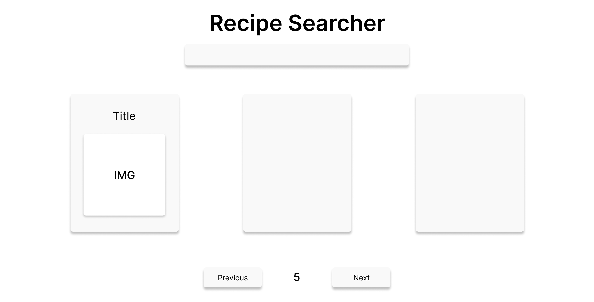
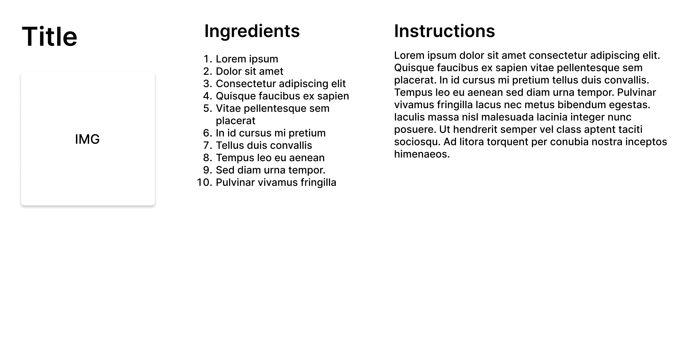
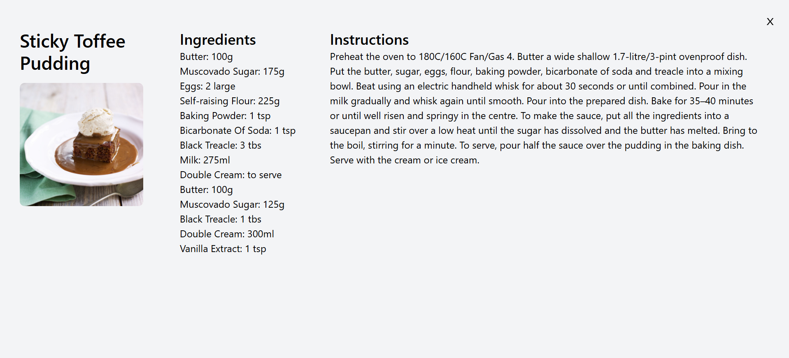

Recipe searcher
Recipe applications are abundant, but many overwhelm users with complex layouts and excessive interactions.
I wanted to create an alternative, where simplicity is favored over feature count.
The UI must be minimal and accessible, making the app intuitive and easy to use.
The UX must be responsive, demonstrating clear error handling and empty states.
Lastly, the application must integrate with an API without compromising performance and predictability.
Designing the layout
The application is designed as a two page system, featuring a home page and a reading page.
The home page allows users to browse recipes easily, displaying three thumbnails per page.
Search is integrated directly into this flow, allowing users to refine the results based on personal requirements.
Clicking on a thumbnail leads to the reading page, which displays the recipe's ingredients and instructions, offering a focused reading experience.
Making a reliable UX
Two things are done to keep the app stable and performant:
Search input is debounced to prevent unnecessary API calls, while results are cached to avoid redundant requests.
This makes the behavior more consistent and provides a faster experience when revisiting searches.

After the user finishes typing, the API is called only after a small delay.
Alongside that, all states of the application is accounted for:
1. Loading states communicate progress without breaking the UI
2. Error states are clear and non-disruptive
3. Buttons are disabled when actions are unavailable
Adding a read-mode modal
Rather than navigating to a separate page, information about a recipe is displayed in a read-mode modal.
This allows users to keep the current browsing context while shifting the focus toward the recipe's details.
Finished product
By limiting the complexity, the app remains simple and reliable without depending on feature count.
This was an important learning experience, as it taught me that apps don't need to be complex to be useful.
As long as it is supported by the right structure, even one core feature is enough.